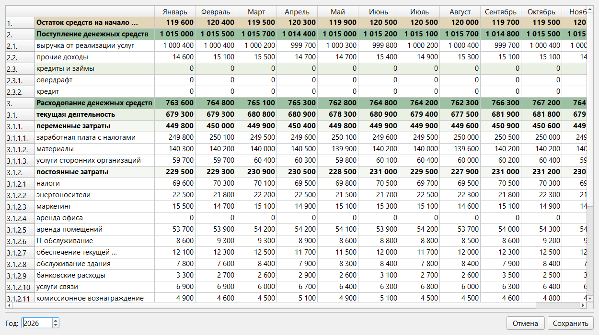
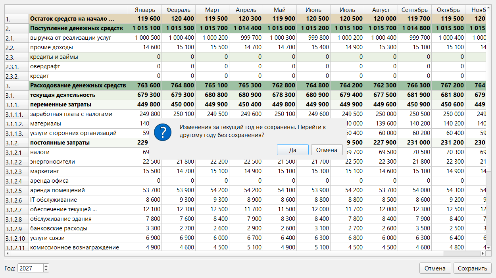
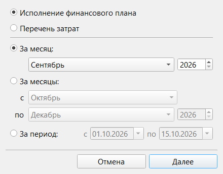
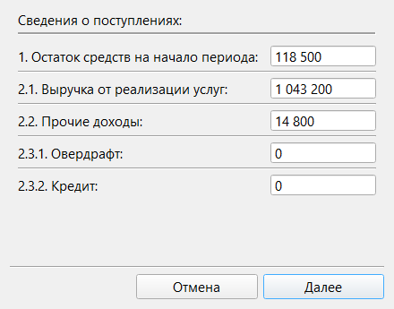
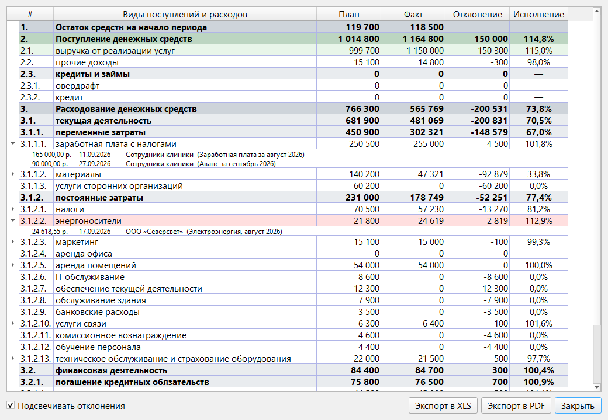
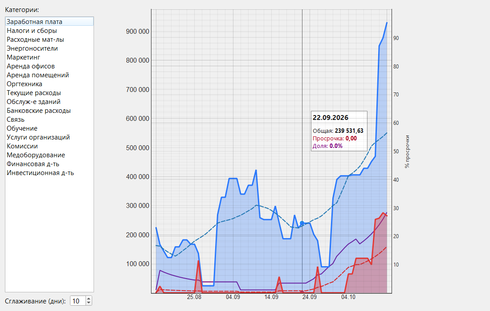

Раздел 11. План-факт и графики |
Кнопка «План-факт» открывает три инструмента: «Финансовый план» (плановые суммы на год), «Исполнение финансового плана» (сравнение плана с оплатами за период) и «Графики» (динамика задолженности). Нажатие на саму кнопку открывает «Исполнение финансового плана».
Финансовый план |
Плановые суммы вводятся по месяцам и статьям. Окно открывается на текущем годе.

Рис. 30. Окно «Финансовый план».

Рис. 31. Запрос при смене года: в 2026 году есть несохранённое изменение.
Исполнение финансового плана |
Отчёт сравнивает план с тем, что реально оплачено за период. Расходы берутся из внесённых оплат (раздел 4), поэтому перед отчётом внесите все оплаты периода, а комиссии банка — через «Учет комиссий» (раздел 9).

Рис. 32. Выбор отчёта и периода.
Вверху выбирается отчёт: «Исполнение финансового плана» или «Перечень затрат» (см. ниже). Период задаётся одним из трёх способов: «За месяц», «За месяцы» (месяцы одного года) или «За период» (две даты). Начало и конец должны быть в одном году.
Программа не знает остатка на счёте и поступлений: она ведёт только платежи. Поэтому после «Далее» вы вводите эти числа сами.

Рис. 33. Сведения о поступлениях.
Числа запоминаются для точно такого же периода (те же даты) и подставляются при следующем открытии. Запоминаются, только если введено хотя бы одно ненулевое значение. Вернуться на предыдущий шаг нельзя: «Отмена» закрывает окно.

Рис. 34. Отчёт за сентябрь. Развернуты строки «заработная плата с налогами» и «энергоносители».
| Столбец | Что показывает |
|---|---|
| План | Плановые суммы из «Финансового плана» за целые месяцы, в которые попадает период. Если период 10–20 сентября, план берётся за весь сентябрь. Для периода из нескольких месяцев суммы складываются. Если план за год не сохранялся, столбец пуст |
| Факт | Расходы — сумма оплат с датой внутри периода (дата оплаты, а не срок оплаты) по категориям платежей, скрытые платежи входят. Остаток на начало и поступления — то, что вы ввели на шаге 2. Остаток на конец — «1» + «2» − «3» |
| Отклонение | Факт минус план: минус — меньше плана, плюс — больше. Для остатков на начало и на конец периода не считается |
| Исполнение | Факт ÷ план в процентах. «—», если план равен нулю. Пусто, если плана нет (в нужных месяцах строка пуста) и для остатков на начало и на конец периода |
Список расходов за период без плана и без шага 2: два столбца, «Сумма» и «Сумма без НДС» (по ставке НДС платежа). Строки разворачиваются так же; скрытые платежи — «Другие».
«Экспорт в XLS» и «Экспорт в PDF» сохраняют таблицу как на экране, без развёрнутых списков оплат. Окна выбора столбцов нет. Имя файла по умолчанию начинается с «ИсполнениеПлана_» или «ПереченьЗатрат_» и содержит даты периода. Страница книжная, по ширине помещается на одну. Перезапись, PDF и ошибки сохранения — как в разделе 10 (PDF нужен установленный Microsoft Excel).
Графики |
«Графики» открывает окно «Построить график» с единственным вариантом «Динамика задолженности». Период по умолчанию — с первого числа прошлого месяца до сегодняшнего дня. Это пример того, что программа умеет показывать по накопленным данным: как менялась сумма неоплаченных платежей и какая её часть просрочена.

Рис. 35. График задолженности за период с 15.08 по 14.10 по всем категориям.
Как считается.
Что на графике. Легенды в окне нет:
| Линия | Что это |
|---|---|
| Синяя с заливкой | Общая задолженность |
| Красная с заливкой | Просроченная задолженность |
| Пунктирные синяя и красная | Те же линии, сглаженные |
| Фиолетовая (шкала справа, 0–100%) | Доля просроченной задолженности в общей, сглаженная |
Наведите мышь на график: появятся вертикальная линия и подсказка с датой, «Общая», «Просрочка» и «Доля» на этот день, без сглаживания. Масштабировать и прокручивать график нельзя.
Что может пойти не так |
| Что вы видите | Что случилось | Что делать |
|---|---|---|
| «Дата начала превышает дату окончания периода» | Начало позже конца. Для «За месяцы» — месяц «с» позже месяца «по» | Исправьте период |
| «Начало и конец периода должны быть в пределах одного года» | Период захватывает два года | Постройте отчёты отдельно по каждому году |
| «Не удалось загрузить данные финансового плана из базы данных» | Окно плана не открылось | Повторите; если повторяется, обратитесь к ответственному за программу |
| «К сожалению, данные не удалось сохранить (см. подробности в логе)» | План не записан, окно осталось открытым | Повторите «Сохранить»; пока окно открыто, введённые значения не потеряны |
| «Изменения за текущий год не сохранены. Перейти к другому году без сохранения?» | Вы сменили год, не сохранив ввод | «Нет» — остаться и сохранить; «Да» — отбросить изменения |
| «Вы уверены, что хотите выйти без сохранения изменений?» | Вы закрываете окно плана с несохранёнными изменениями | «Нет» — вернуться и сохранить; «Да» — отбросить |
| «Не удалось загрузить данные о платежах из базы данных (подробнее см. лог)» | Отчёт или перечень не открылись | Повторите; если повторяется, обратитесь к ответственному за программу |
| Число введено или вставлено, а ячейка не изменилась | Значение не целое число (копейки, буквы, неразрывный пробел) или строка цветная | Введите целое число в ячейку без вложенных строк |